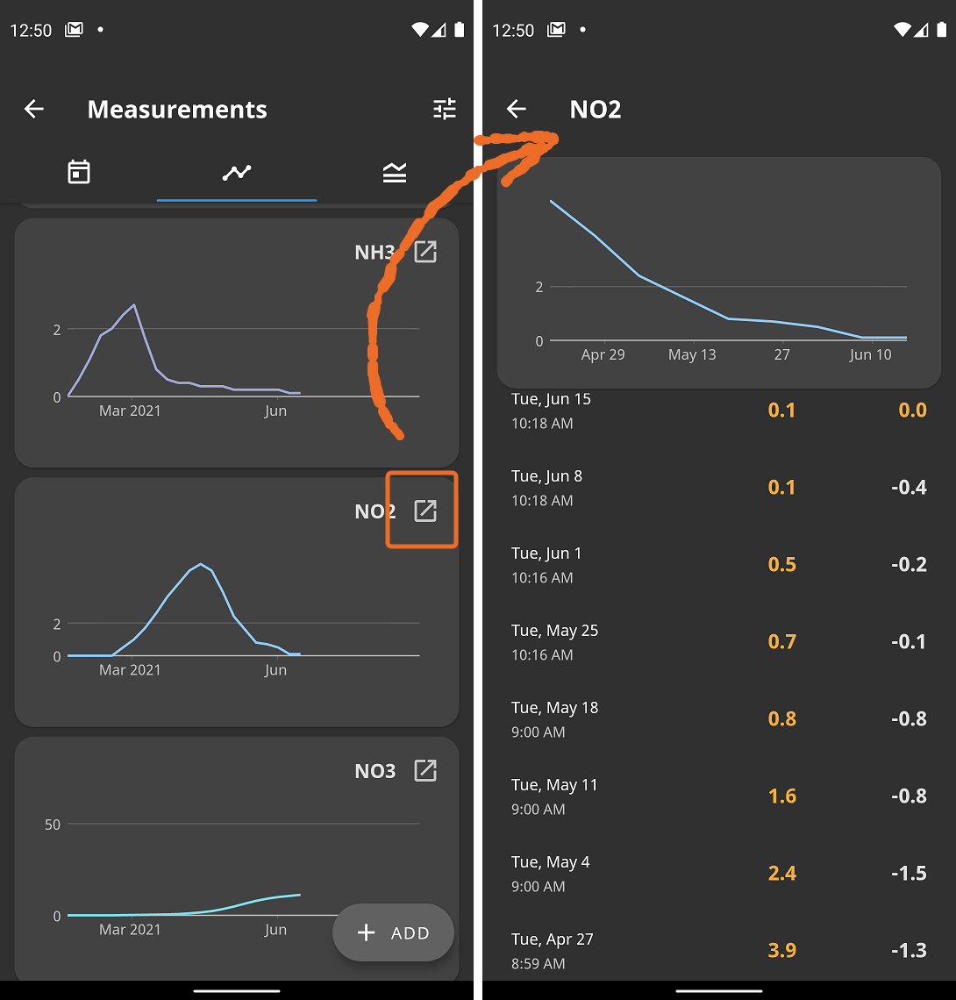
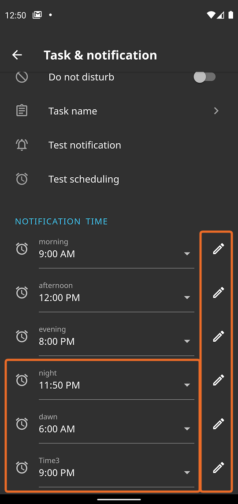
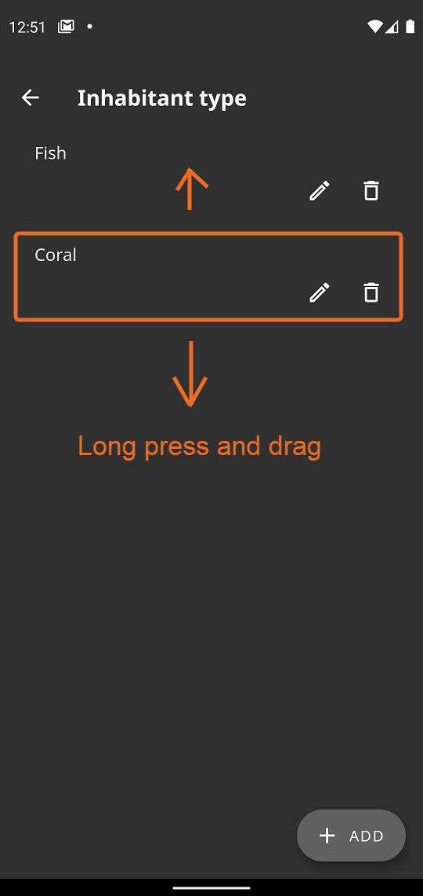
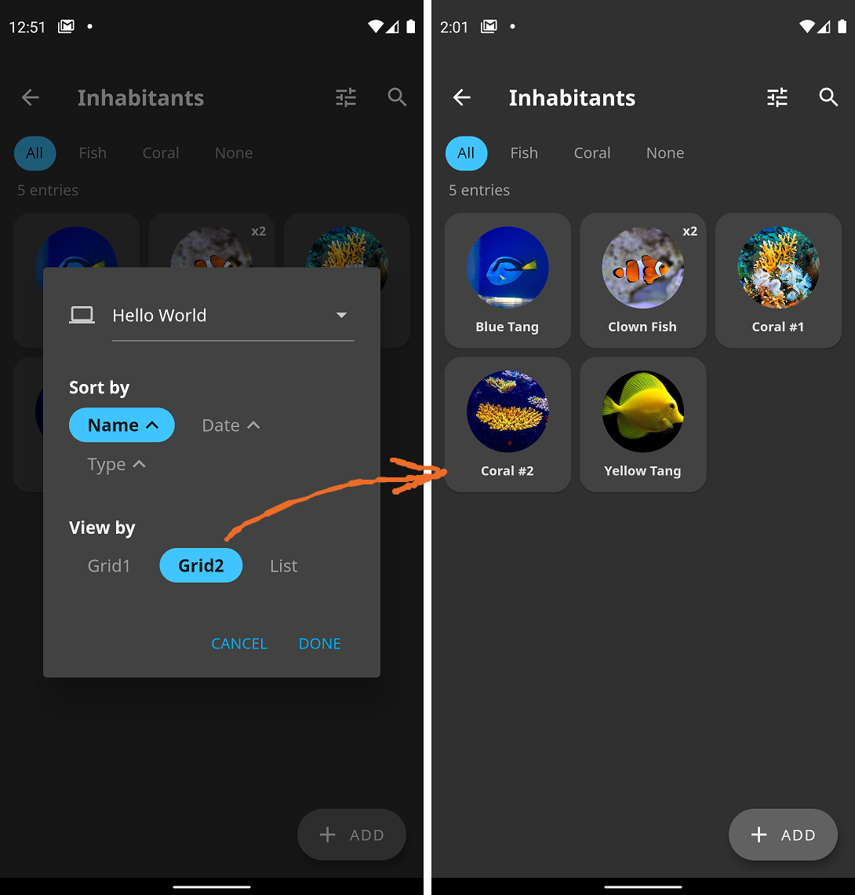
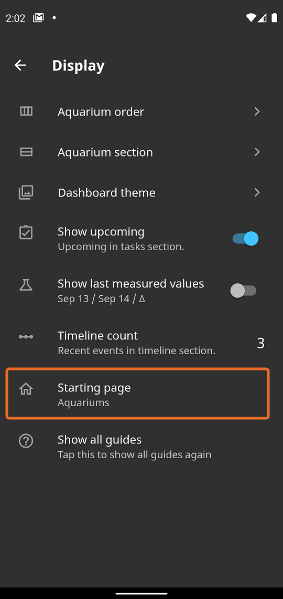
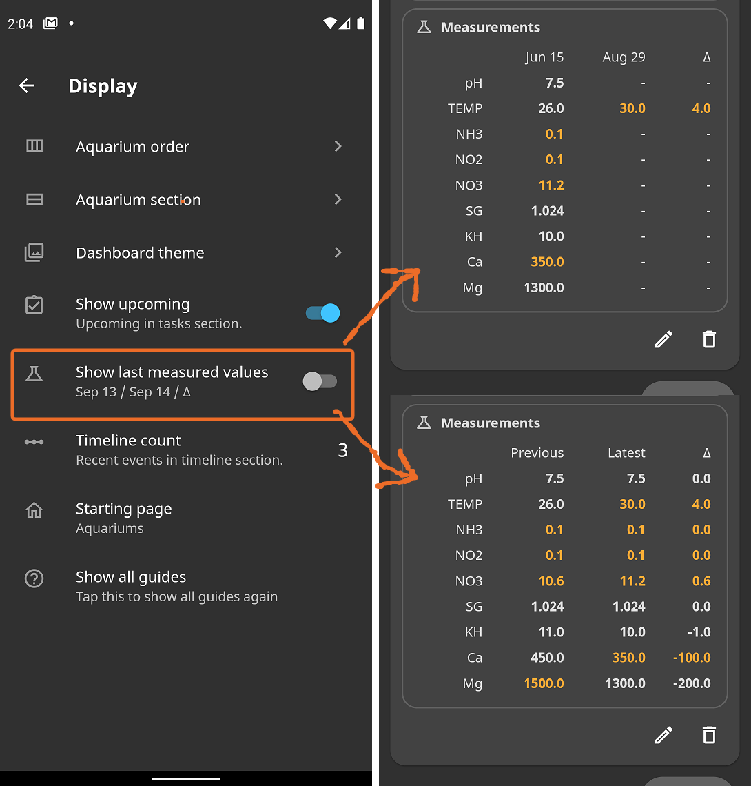

Version 2.1.0
- Measurement charts with value lists (old app style)

- 3 more reminder times and editable label

- Type order can be changed

- Grid2 view option

- Starting page option

- Measurement section option

- Support Arab language
- Change expenses page
- Fix several bugs
Old Versions